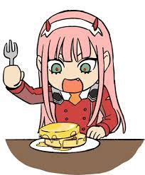

She always smile and when she do tht she jus look like the shining moon.
She likes to be this and when i look her like This my heart will melt
Do you know she likes honey more than anything will See That......
boku na darling
 Well You see Zero two Honey so muc.
If you saw in anime the flash back
Hiro started her to eat sweet
She like sweet more cuz its a taste
That hiro taught her......